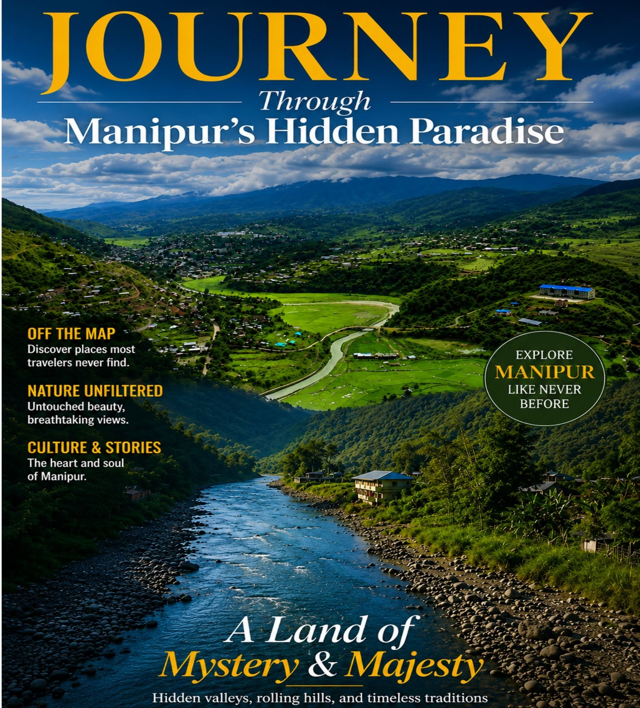
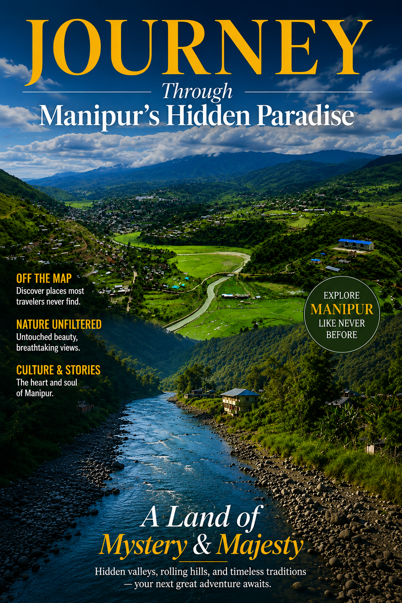

Welcome to this guide showcasing the unique beauty, heritage, and potential of Tamenglong, Senapati and Noney districts of Manipur. Nestled amidst picturesque hills and rich biodiversity, these districts are home to vibrant cultures, breathtaking landscapes and remarkable tourism opportunities.
This guide offers an overview of each district's natural attractions, historical significance, cultural traditions and developmental achievements — from the majestic waterfalls and caves of Tamenglong, to the scenic valleys of Senapati, and the emerging tourism destinations of Noney.
— Editorial Team
Download the Magazine (PDF)
Where wilderness, nature and adventure meet.
Explore Tamenglong → 02 · Northern ManipurHigh hills, living traditions and journeys beyond the familiar.
Explore Senapati → 03 · Western ManipurRivers, forests and stories from Manipur's western hills.
Explore Noney →Some places are visited.
Others become part of the story we carry home.
Read the Foreword by the Hon'ble Governor of Manipur, along with messages from GOC 3 Corps, IGAR (East) and HQ 22 Sector Assam Rifles — plus a note from the editorial desk.
Read the Foreword →Discover Assam Rifles' community partnership across the hills — from orange procurement and Operation Sadbhavana to the Robert Cup football tournament.
Explore Beyond the Hills →Routes, distances and taxi fares for each district.
Orange Festival, Barak Festival, Gaan-Ngai and more.
Guest houses, hotels and homestay options.
Browse landscapes, culture and wildlife across all three districts.